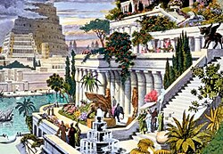
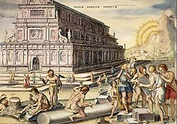
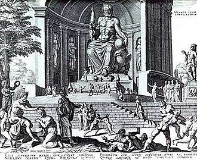
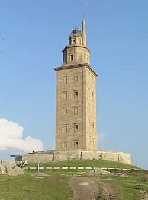

Cheopso piramidė, arba Didžioji Gizos piramidė – Egipto piramidė
Gizoje, faraono Cheopso (Chufu) kapas. Tai didžiausia Senovės Egipto
piramidė, pastatyta apie 2570 m. pr. m. e.
Piramidė yra seniausias iš septynių pasaulio stebuklų ir
vienintelis, išlikęs iki mūsų dienų. Senovės Egipto laikais jos
vardas buvo „Chufu horizontas“. Visa struktūra, kurios originalus
aukštis buvo apie 146,6 m ir kvadratinio pagrindo kraštinės ilgis
230,33 m, užima ~53 000 kvadratinių metrų plotą, yra pastatyta iš
maždaug 2,3 mln. akmens luitų. Dabartinis piramidės aukštis − 137,38
m, jos išorinės sienos paklotos iš 203 akmenų eilių. Sienų polinkio
kampas 51°51'. Nustatyta, kad piramidės perimetro ilgio santykis su
jos aukščiu buvo lygus 2Pi skaičiui. Piramidė pastatyta itin
tiksliai: jai paruošto pagrindo aukščio skirtumai neviršija 2,1 cm,
o kraštinių ilgio didžiausias skirtumas yra tik 4,4 cm. Piramidės
akmenų svoris vidutiniškai yra 2,5 tonos. Piramidė statyta aukštyn
mažėjančiais akmenimis. Kai kurie pagrindo akmenys sveria iki 15
tonų. Sunkiausi akmenys yra piramidės viduje, faraono Cheopso
laidojimo patalpos lubose. Tai didžiuliai granito blokai, kurie gali
sverti 50−80 tonų ir yra skirti išskirstyti piramidės akmenų svorio
jėgas virš faraono laidojimo patalpos. Originaliai piramidė buvo
padengta balto kalkakmenio apdailos blokais, kurie nuardyti XIII a.
statant dabartinio Kairo namus. Manoma, kad piramidę statė apie 100
000 žmonių ilgiau kaip 20 metų.
Cheopsas, kaip ir jo pirmtakai, irgi norėjo būti palaidotas
piramidėje. Reikėjo atrasti tinkamą vietą statybai, nes milžiniškas
statinys sveria 6 400 000 tonų, taigi jo pagrindas turėjo būti itin
tvirtas. Tinkama vieta rasta į pietvakarius nuo dabartinės Egipto
sostinės Kairo, dykumos plynaukštėje, už septynių kilometrų į
vakarus nuo Gizos. Ten tvirtas uolėtas pagrindas galėjo išlaikyti
piramidės svorį. Parengiamuosiuose darbuose, kurie vyko apie dešimtį
metų, dirbo apie 4000 žmonių – menininkai ir architektai,
akmenskaldžiai ir įvairūs amatininkai. Egipto gyventojai statybose
dalyvavo savanoriškai, jie tikėjo, kad prisidėję prie didingos
užduoties įgaus dalelę dieviškojo faraono nemirtingumo. Darbininkai
keltais persikeldavo per Nilą ir traukdavo į akmenų skaldyklą.
Akmens luito aukštis ir ilgis turėjo būti – 0,80-1,45 m. Išorės
apdailos sluoksnio balto kalkakmenio blokai buvo atgabenami iš
kitoje Nilo pusėje buvusios Turos skaldyklų, didieji granito blokai
− iš toli Nilo aukštupyje Asuano skaldyklų. Cheopso piramidės viduje
47 m ilgio koridorius, kylančia didžiąja galerija, veda į 10,5 m
ilgio, 5,2 pločio ir 5,8 m aukščio patalpą – faraono laidojimo
kambarį. Jis buvo išpuoštas granitu, lubos pastatytos penkiais
aukštais, kad paskirstytų patalpai tenkantį aukščiau esančių akmenų
masės svorį. Nekylant į karaliaus kambarį, kitas koridorius
horizontaliai veda į patalpą, pramintą „Karalienės kambariu“. Kitas
apie 100 m ilgio koridorius veda žemyn į po piramide esantį nebaigtą
kambarį.
Kabantieji Babilono sodai

Kabantieji Babilono sodai
Kabantieji Babilono sodai (arba Semiramidės sodai) – sodų
kompleksas, pastatytas senovės mieste Babilone, Eufrato pakrantėje.
Laikomi vienu iš senovės septynių pasaulio stebuklų. Neišlikę.
Manoma, kad šie sodai sukurti apie 600 m. pr. m. e. Pasak senovės
graikų legendos, sodai buvo sukurti, nes karaliaus Nabuchodonosaro
II žmona Amytis ilgėjosi savo gimtųjų namų Medijoje. Karalius
negalėjo žiūrėti į liūdinčią žmoną ir nusprendė ją nudžiuginti
didžiuliais sodais, priminsiančiais jai namus ir kad ji pasijustų it
miškais apaugusiuose gimtinės kalnuose. Nelabai aišku kodėl
kabantieji sodai vadinti ir Semiramidės, keliais amžiais anksčiau
valdžiusios Asirijos karalienės vardu.
Kabantys sodai turėjo būti prie upės, kad lengviau būtų juos
drėkinti. Sodai buvo sukurti viena virš kitos buvusiose terasose,
galėjusiose siekti 40 m aukštį. Visas statinys turėjo piramidės
formą, nes aukščiau esančios terasos buvo mažesnės už žemiau
esančias. Terasos buvo išklotos akmens luitais, užlietais švinu.
Kiekviena terasa laikėsi ant stambių suremtų akmeninių gegnių,
kurios sudarė kolonadą. Statinio pagrinde buvo didelis ketvirtainis
pamatas. Į kiekvieną terasą suvežta tiek žemės, kad jose galėjo
įsišaknyti ir dideli medžiai.
Į sodus buvo sodinami įvairiausių rūšių augalai: figos, migdolai,
riešutmedžiai, granatai, vijoklinės rožės, vandens lelijos ir
daugybė kitų – buvo atgabenti iš visos imperijos. Sodams drėkinti
buvo naudojamas Eufrato upės vanduo. Siurbliais pakeltas iki
viršutinės terasos, vanduo tekėjo žemyn, taip vėdindamas ir
drėkindamas sodus. Tarp terasų įrengtose salėse vyko puotos.
Artemidės šventykla

Artemidės šventykla
Artemidės šventykla (gr. Ἀρτεμίσιον, turk. Artemis Tapınağı) –
vienas iš septynių pasaulio stebuklų, stovėjusių Efese (dabartinė
Turkija). Pagal legendą Efesą įkūrė amazonės – karingų moterų
gentis. Paskutinė Artemidės šventykla jame buvo statoma daug kartų.
Ankstyvieji mediniai statiniai pasenę suirdavo, sudegdavo arba
sugriūdavo per žemės drebėjimus, todėl VI a. pr. m. e. viduryje buvo
nutarta globėjai deivei Artemidei pastatyti didingą buveinę,
negailint nei lėšų, nei laiko. Geriausiu buvo pripažintas
Chersitrono projektas. Jis pasiūlė šventyklą statyti iš marmuro,
pelkėje prie upės. Chersitronas nutarė, kad minkšta pelkėta dirva
bus geras amortizatorius per žemės drebėjimus. O kad savo svorio
slegiamas marmurinis kolosas nenugrimztų į žemę, buvo iškasta gili
pamatų duobė ir pripildyta medžio anglies bei vilnos mišinio -
padaryta kelių metrų storio pagalvė. Šventyklos statyba buvo labai
sudėtinga, ir kada didysis architektas būdavo bejėgis, jam į pagalbą
ateidavo pati Artemidė…Cheristonas nesulaukė statybos pabaigos.
Šventykla buvo baigta apie 550 m. pr. m. e.
Nežinoma, kaip ji buvo papuošta, kokios statulos joje stovėjo,
kokios buvo freskos ir kokie paveikslai, kaip atrodė pati Artemidės
statula. Visa, ką buvo padaręs Chersitronas ir jo įpėdiniai,
sunaikino Herostratas. Eilinis žmogus nutarė tapti nemirtingas,
atlikdamas nusikaltimą - 356 m. pr. m. e. liepos 21 d. sudegindamas
Artemidės šventyklą.
Antrąją šventyklą statė architektas Cheirokratas. Šį kartą statyba
ilgai neužtruko. Dabar nebuvo mįslių ir techninių išradimų. Reikėjo
pakartoti tai, kas padaryta anksčiau.
Svarbiausią statinį rėmė 127 marmuro kolonų, kurių aukštis siekė 20
metrų. Pastatas dekoruotas gražiomis skulptūromis ir kitais
papuošimais. Šventyklos viduryje pastatyta Artemidės skulptūra. Tai
viena didžiausių senovės šventyklų - jos pagrindas buvo 109 m ilgio
ir 50 m pločio. Artemidės šventykla pastatyta apie 550 m. pr. m. e.
(Achemenidų dinastija). Iš vidaus šventyklą puošė nuostabios
Praksitelio ir Skopo statulos, bet dar puikesni buvo paveikslai.
Ši šventykla ir buvo paskelbta pasaulio stebuklu, nors to galbūt
labiau verta buvo pirmoji, pastatyta Chersitrono.
Dzeuso skulptūra Olimpijoje

Dzeuso skulptūra Olimpijoje
Dzeuso skulptūra Olimpijoje buvo vienas iš Septynių pasaulio
stebuklų. Olimpija Senovės Graikijoje buvo svarbus religinis
centras, kuriame daugiausiai garbinamas dievas buvo Dzeusas. Šiame
mieste buvo rengiamos ir olimpinės žaidynės, šventės ir atletikos
varžybos.
V a. pr. m. e. Olimpijos gyventojai Dzeuso garbei nusprendė
pastatyti šventyklą, kuri iškilo 466–456 m. pr. m. e. Ji buvo
pastatyta iš masyvių akmens luitų ir supama kolonų. Šventykla
neturėjo dievo skulptūros, todėl jai sukurti buvo išrinktas Fidijas
(Feidijas), žinomas Atėnų skulptorius. Anksčiau jis buvo sukūręs dvi
Atėnės statulas. Dzeuso statula stovėjo šventykloje, kurios ilgis
siekė šešiasdešimt keturis metrus, plotis - dvidešimt aštuonis,
vidinė patalpa buvo dvidešimt metrų auksčio. Salės gale soste
sėdintis Dzeusas galva rėmė lubas. Iki juosmens apnuogintas Dzeusas
buvo padarytas iš medžio, jo „oda“ - iš dramblio kaulo plokščių, o
drabužiai – iš aukso lakštų. Dievas sėdėjo soste, inkrustuotame
juodmedžiu ir brangakmeniais. Vienoje rankoje jis laikė auksinę
pergalės deivės Nikės skulptūrą, kita rėmėsi ilgu skeptru. Statinys
buvo apsuptas daugiau nei dviejų metrų storio kolonų. Sosto šonus
buvo ištapęs dailininkas Panenas, Fidijo giminaitis ir padėjėjas.
Dzeusas buvęs toks didingas, kad Fidijas, baigęs darbą priėjo prie
statulos ir paklausė: - Ar tu patenkintas, Dzeusai? Pasigirdo
perkūno trenksmas, ir grindys prie statulos kojų įskilo.
Skulptūra buvo pabaigta apie 435 m. pr. m. e.
Vėliau Bizantijos imperatoriai labai atsargiai pervežė statulą į
Konstantinopolį. V m. e. a. imperatoriaus Teodosijaus II rūmai
sudegė. Ugnis prarijo medinį kolosą: tik keletas suanglėjusių kaulo
plokštelių ir išsilydžiusio aukso gabalėliai liko iš Fidijo kūrinio.
Halikarnaso mauzoliejus
Halikarnaso mauzoliejus
Halikarnaso mauzoliejus – vienas iš septynių pasaulio stebuklų,
stovėjęs Mažojoje Azijoje, Halikarnaso mieste (dabar Bodrumas).
Mauzoliejų Persų imperijos Karijos provincijos satrapui Mauzolui
(valdė 377–353 m. pr. m. e.) po mirties pastatydino jo žmona ir
sesuo Artemisija. Statyba buvo baigta 351 m. pr. m. e. Pati
Artemisija nesulaukė statybos pabaigos ir mirė vieneriais metais
anksčiau. Artemisijos pelenai buvo palaidoti Mauzoliejuje greta
Mauzolo.
Graikų architektai Satyras ir Pitijas suprojektavo apie 45 m aukščio
statinį, kurį sudarė trys pagrindiniai elementai – platforma,
antkapis ir stogas. Mauzoliejų pastatė kalvos viršūnėje. Iš pradžių
buvo pastatyta didelė platforma, į kurios viršų vedė laiptai,
išpuošti akmeniniais liūtais. Platformą supo dievų ir deivių, raitų
karių skulptūros – graikų skulptorių Briakso, Leocharo, Skopo ir
Timočio darbai. Ant platformos stūksojo pats kvadratinio plano
antkapis, pastatytas daugiausiai iš marmuro. Šią statinio dalį puošė
reljefai, vaizduojantys graikų mitologijos ir istorijos scenas.
Piramidinį stogą puošė kvadriga: keturi žirgai tempia kovos vežimą,
kurį valdo Mauzolas ir Artemisija.
Mauzoliejus gerokai pergyveno patį Halikarnaso miestą ir išstovėjo
apie 16 šimtmečių. XII amžiuje jis smarkiai nukentėjo nuo žemės
drebėjimų. Penkioliktojo amžiaus pradžioje buvo išlikę tik pamato
fragmentai. XV–XVI a. pradžioje Rodo (Maltos) ordinas Halikarnaso
mauzoliejaus likučius naudojo Bodrumo tvirtovės statybai, kurios
sienose iki šiol galima įžiūrėti šlifuoto marmuro gabalų. Iš tų
laikų yra išlikusi legenda, kad riteriai po Mauzoliejumi aptiko
karstą ir nutarė jį atidaryti vėliau, kitą dieną, bet nakčia karstas
buvęs pavogtas. Šis pasakojimas rodosi abejotinas, kadangi 1960 metų
archeologiniai kasinėjimai atskleidė, kad dar iki Mauzoliejaus
sugriovimo vagys buvo prakasę tunelį iki laidojimo patalpos. Ordino
riteriai keletą Mauzoliejaus skulptūrų panaudojo Bodrumo tvirtovės
puošimui, šiuo metu kai kurios iš jų saugomos Britų muziejuje.
1852 metais Mauzoliejaus vietą aptiko ir kasinėjo britų archeologas
Charles Thomas Newton. Jis aptiko sienų likučius, laiptus, tris
pastato platformos kampus, iškasė bareljefų ir stogo fragmentų bei
rado vieną vežimo, puošusio Mauzoliejaus stogą, ratą (maždaug dviejų
metrų skersmens), galop aptiko Mauzolo ir Artemisijos skulptūras.
1966-1977 m. Mauzoliejų nuodugniai tyrinėjo danų archeologas
Kristian Jeppesen iš Arhu universiteto. Jis publikavo šešių tomų
veikalą „The Maussolleion at Halikarnassos“.
Rodo kolosas
Rodo kolosas
Rodo kolosas – milžiniška graikų Saulės dievo Helijo skulptūra,
stovėjusi Rodo saloje III a. pr. m. e., vienas iš septynių pasaulio
stebuklų.
Po Aleksandro Didžiojo mirties 323 m. pr. m. e. imperiją pasidalijo
jo generolai (diadochai). Egiptas atiteko Ptolemėjui, kuris sudarė
sąjungą su Rodo sala ir sėkmingai kontroliavo prekybą Viduržemio
jūroje. Kito Aleksandro generolo – Antigono Monoftalmo – sūnus
Demetrijas Poliorketas 305 m. pr. m. e. užpuolė Rodą. Bet miestą
supo stiprūs įtvirtinimai, todėl Demetrijas liepė pagaminti didelius
apgulties bokštus. Pirmojo bokšto konstrukcijos buvo sukrautos į
šešis laivus, bet šie nuskendo audros metu. Tada Demetrijo nurodymu
buvo pastatytas dar didesnis bokštas, pramintas Helepoliu
(Helepolis), bet Rodo gynėjai užtvindė žemę prieš gynybinę sieną, ir
bokštas negalėjo būti pristumtas pakankamai arti. 305 m. pr. m. e.
Ptolemėjo pasiųsta kariuomenė atplaukė Rodui į pagalbą, ir
Demetrijas buvo priverstas skubiai atsitraukti, metęs didžiumą
apgulties įrangos. Pergalei pažymėti Rodo gyventojai nutarė
pastatyti milžinišką salos globėjo – Saulės dievo Helijo –
skulptūrą, šį darbą pavesdami Charesui – jau pagarsėjusiam
skulptoriui, Lisipo mokiniui. Darbui finansuoti buvo nutarta
parduoti Demetrijo paliktus apgulties įrenginius.
Amžininkai rašė, kad vidinę figūros konstrukciją sudarė iš akmens
blokų pastatyti bokštai, stovintys ant 15 metrų aukščio marmurinio
postamento. Į akmens blokus buvo įkalti geležies strypai, o prie jų
tvirtinamos bronzos plokštės, formuojančios skulptūros paviršių.
Statyboje buvo naudojami taip pat ir perlydyti Demetrijo kariuomenės
palikti metaliniai ginklai, ir apgulties bokštų konstrukcijos.
Teigiama, kad iš viso buvę sunaudota 500 talentų bronzos ir 300
talentų geležies (atitinkamai maždaug 13 ir 8 tonos). Viršutinei
koloso daliai statyti buvo supiltas didelis grunto pylimas, kurį
vėliau nukasė. Helijas buvo pavaizduotas kaip jaunuolis su vainiku,
bet autentiška koloso išvaizda nežinoma. Visas skulptūros aukštis
siekė apie 35 metrus (panašiai kaip ir Laisvės statula Niujorke).
Šaltiniuose nurodomos dvi koloso vietos – uosto vartai ir uosto
bangolaužis, bet dabartiniai tyrinėjimai pirmąjį variantą atmeta.
Darbas buvo baigtas per 12 metų – 282 m. pr. m. e. Statula išstovėjo
tik 56 metus, iki 226 m. pr. m. e. (data gali būti netiksli), kai ją
sugriovė žemės drebėjimas. Silpniausioji vieta pasirodė besą keliai.
Ptolemėjas III pasiūlė lėšų koloso atstatymui, bet orakulo
pranašystė buvo nepalanki šiam sumanymui, tad atstatymo buvo
atsisakyta. Liekanos pragulėjo virš 800 metų. Plinijus vyresnysis
rašo, kad ne kiekvienas vyras sugebėdavęs apglėbti skulptūros
pirštą. 654 m. arabai užėmė Rodą ir, kronikininko Teofano liudijimu,
skulptūros metalas buvo parduotas pirkliui iš Edesos. Visas pirkinys
buvęs sukrautas ant 900 kupranugarių.
Aleksandrijos švyturys

Aleksandrijos švyturys
Aleksandrijos švyturys pastatytas III a. pr. m. e., valdant
Ptolemėjui II (280–247 m. pr. m. e.), vienas iš septynių pasaulio
stebuklų. Šis žinomiausias pasaulio švyturys prastovėjo apie 1500
metų, kol jį galutinai sugriovė žemės drebėjimas.
Švyturio paskirtis – padėti orientuotis laivams, plaukiantiems į
Aleksandrijos uostą – nulėmė ir statybos vietą – nedidelę Faro
salelę netoli Aleksandrijos (Egiptas). Statyba truko apie 20 metų ir
buvo baigta 283 m. pr. m. e.
Arabiškųjų rašytinių šaltinių duomenimis, apie 117 m aukščio, baltu
marmuru dengtas švyturys buvo trijų pakopų bokštai: ~65 m aukščio
kvadratinis pagrindas, kuriame gyveno darbininkai ir kareiviai, ant
jo – ~30 m aukščio aštuonkampis bokštas, pagal pagrindinių vėjų
kryptis, padengtas marmuru su spiraliniu pandusu; trečiasis bokštas
buvo apvainikuotas 9 m aukščio kupolu ir paremtas marmurinimės
kolonomis; tarp jų degė švyturio ugnis, (laterna). Švyturio viršūnę
puošė bronzinė skulptūra (nurodomi variantai – Dzeusas, Poseidonas,
tritonai). Naujausieji tyrinėjimai (pagal 1994 m. jūros dugne rastus
švyturio likučius) leidžia daryti prielaidą, kad statinio aukštis
galėjo siekti net 134 mеtrus. Taigi jis buvo vienas iš aukščiausių
planetos statinių, nusileisdamas tik Gizos piramidėms.
Kuras švyturiui buvo užvežamas mulų arba arklių traukiamais vežimais
spiraliniu pandusu. Šviesai atmušti jūros kryptimi buvo pritaikyti
dideli bronziniai veidrodžiai, todėl jūreiviai Aleksandrijos
švyturio šviesą naktimis matydavo už 50 km. Legenda pasakoja, kad
šis veidrodis taip pat buvo naudojamas priešų laivams susekti ir
sudeginti, kol jie dar nepasiekė kranto.
Nuo IV iki XV a. švyturį ne kartą apgriovė žemės drebėjimai, ypač
1303 ir 1323 m. 1349 m. arabų keliautojas Ibn Battuta aplankė
švyturį ir konstatavo, kad šis visiškai sugriuvęs, o dar po 100 metų
sultonas Ašrafas Quaitbay toje vietoje pastatė fortą, kurio statybai
buvo panaudotos ir kai kurios švyturio dalys. Nors švyturys neišliko
iki mūsų dienų, jo įtaka vis dar jaučiama, nes jis tapo prototipu
daugeliui kitų švyturių, pastatytų Viduržemio jūros pakrantėse.
Aleksandrijos švyturio garsas paliko ir lingvistinę žymę – Faro
salos pavadinimas tapo bendriniu romanų kalbų žodžiu, įgydamas
„švyturio“ reikšmę (pr. phare, it. faro, port. farol, isp. faro,
rumunų far).1